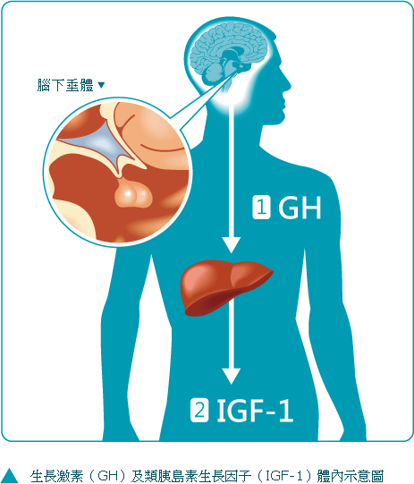
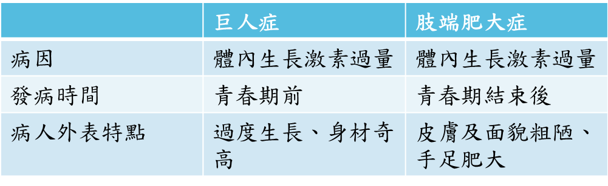

什麼是肢端肥大症？
簡介
肢端肥大症是一種體內生成過量生長激素(GH)時發生的慢性荷爾蒙疾病。
常見之發病原因
九成以上的案例都是由腦下垂體的良性腫瘤促使其分泌大量生長激素(GH)所引起，而生長激素(GH)過量會進一步導致類胰島素生長因子(IGF-1)濃度上升造成體型脹大以及生理功能的異常。

發病率
根據國外的流行病學調查，其發生率為每年每百萬人口中每年會發生3-4個新病例；目前在台灣約有800位肢端肥大症病人，推估每年持續新增約60位病友。
那些人會受影響？
30歲以上為肢端肥大症潛在病患需注意的年齡，中年男女也為高風險族群。
患者偏高的類胰島素生長因子(IGF-1)濃度可引發之生理變化包刮手部、足部、內臟和臉部特徵增大，同時導致患者有較高的風險發生嚴重併發症及較高的死亡率。
當病情發展一段時間後，開始會出現典型的臨床症狀。最容易察覺的表現大多為四肢指頭變粗、顴骨突出、皮膚增厚、頭痛，而患者也常表示患病後鞋帽變小，必須經常更換。另外，女性病人可能會經期不穩或不孕等，男性病人則可能會有性功能減退、陽痿等和荷爾蒙相關的問題。
參考圖片
患者的鼻子、耳朵及四肢會漸漸變得肥厚，因此有時會被戲稱為史瑞克
若仔細留意，在病人患病初期就可以發現臉部有細微改變而及早治療
Previous
Next
接受手術
國內外指南認為手術切除腫瘤是首選治療方法，能迅速減輕腫瘤的佔位效應及視交叉減壓。
不做手術
對於不適合手術、不願手術和腫瘤切除後殘餘腫瘤的患者可選擇以藥物如生長抑素類似物進行輔助治療。
放射治療
若發生手術病情緩解不全或者殘留腫瘤的情況，則可進行放射線治療作為輔助。
由於肢端肥大症疾病症狀進程緩慢且複雜，再加上上述症狀相當容易與其他疾病混淆，因此多數患者較難在病發初期就找對醫師及時診斷治療。在這樣的情況下，許多患者在延遲6、7年才轉向內分泌科醫師求助，導致將近有7成患者的腫瘤已大於1公分以上，其中更有7成會對視神經產生壓迫進而影響視力，即使手術也不易將腫瘤拿乾淨。
肢端肥大症 vs 巨人症
兩種疾病之共同主因皆為腦下垂體腫瘤刺激過量生長激素(GH)分泌所造成，若此狀況發生於青春期之前，因骨骺尚未閉合，會引起巨人症；而在青春期之後，則會導致肢端肥大症。

及早治療的重要性！
肢端肥大症是一種罕見的疾病，最常見的症狀為手腳變大、臉型等外觀上的改變，但此疾病的外表變化緩慢，不容易自我察覺，反而旁人的觀察會比患者本身來得敏銳及容易。
為了避免真正的患者因延誤診斷而導致腫瘤增長、疾病惡化，除了平時應定期自我檢測外，也請不忘關心周遭親朋好友，若符合以下症狀超過兩項者，就應提高警覺，盡快尋找內分泌科醫師協助！
Checklist
• 您是否已達30歲？
• 您的鞋子大小，與去年相比是否變大？
• 您的手指，與去年相比是否覺得變粗？
• 與去年照片中的您相比，現在的鼻翼兩側是否變寬？
• 與去年照片中的您相比，現在的下巴是否有變長或變厚？
• 您是否有感覺舌頭變粗，與牙齒磨擦機會變大？
• 您是否有時在進食或說話會咬到舌頭？
• 您是否感覺聲音變得較低沉？
• 您是否發覺週遭親友有呼吸中止症問題？
• 最近是否感覺血壓或血糖值突然變高？